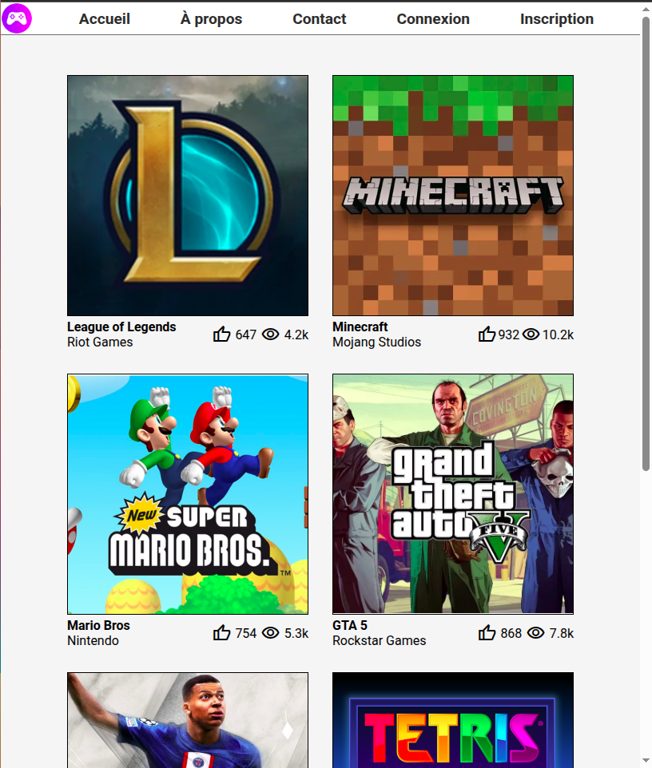
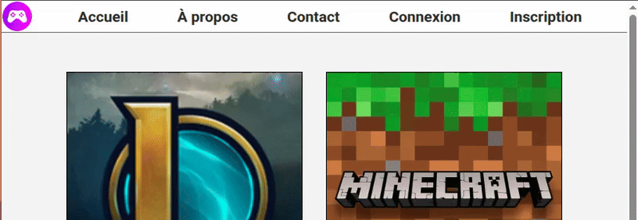
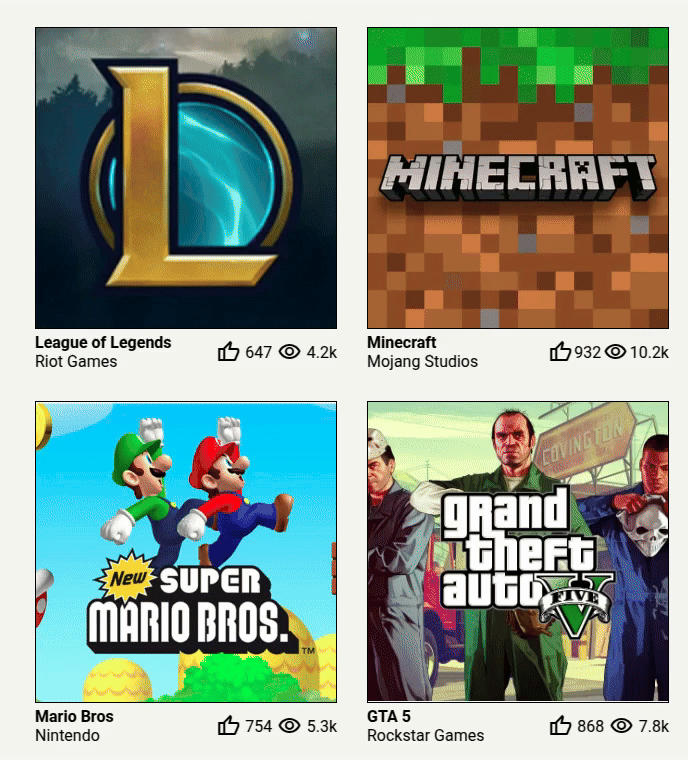

Objectif
Réalisez la page HTML et le style CSS de la fenêtre ci-dessous.

Consignes :
Aide pour les icônes
Pour les icônes, vous pouvez utiliser des bibliothèques comme Flaticon ou, Material Symbols de Google.
1. Utilisez les Flexbox pour le contenu de la page
Utilisez les Flexbox pour rendre le contenu de la page adaptable à sa largeur !
Par exemple : si la fenêtre est réduite, le contenu doit s'adapter comme ci-dessous :

2. Hover dans le header
Les boutons du header doivent changer de couleur au passage de la souris (hover)

3. Hover sur les tuiles
Au passage de la souris sur une tuile, une icône de téléchargement doit apparaître.

-
Pour y parvenir, tentez d'abord d'afficher l'icône par-dessus la tuile en utilisant l'attribut position vu en cours.
- Pour masquer l'icône vous pouvez utiliser opacity: 0;, puis, pour l'afficher lors du hover opacity: 1;
- Pour l'animation, utilisez transition: opacity 0.3s; sur la div contenant l'icône.